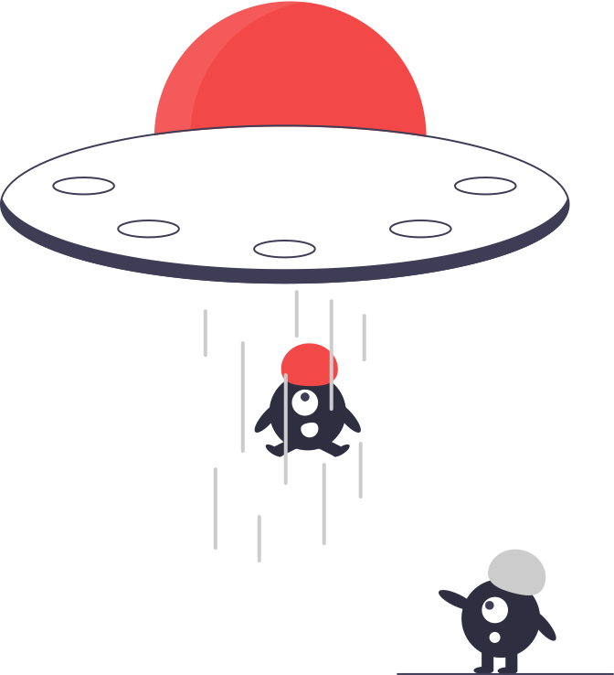

<ion-header>
    <ion-toolbar>
        <ion-button shape="round" fill="outline" color="danger" (click)="closeModal()"class="ion-activatable ripple-parent">
            <ion-ripple-effect></ion-ripple-effect>
            <ion-icon name="arrow-back-outline"></ion-icon>Back</ion-button>
    </ion-toolbar>


    <!-- Searchbar with danger color -->
    <ion-searchbar color="danger" autocomplete="on" #search debounce="500" (ionChange)="_ionChange($event)"></ion-searchbar>

</ion-header>
<ion-content class="ion-padding">

    <!-- Show Elements -->
    <ion-list>
        <ion-item *ngIf="searchedItem.length != 0">
            <ion-label>
                <ion-row>
                    <ion-col>
                        <h1>Name</h1>
                    </ion-col>
                    <ion-col>
                        <h1>Symbol</h1>
                    </ion-col>
                    <ion-col>
                        <h1>Atomic Mass</h1>
                    </ion-col>
                </ion-row>
            </ion-label>
        </ion-item>
        <ion-item (click)="mouseClick(x.symbol,x.name,x.groupBlock)" *ngFor="let x of searchedItem"class="ion-activatable ripple-parent">
            <ion-ripple-effect></ion-ripple-effect>
            <ion-label>
                <ion-row>
                    <ion-col>
                        <h2>{{x.name}}</h2>
                    </ion-col>
                    <ion-col>
                        <h3>{{x.symbol}}</h3>
                    </ion-col>
                    <ion-col>
                        <h3>{{x.atomicMass}}</h3>
                    </ion-col>
                </ion-row>

            </ion-label>
        </ion-item>
    </ion-list>
    <div *ngIf="searchedItem.length == 0">
        
        <h1 class="fun">Element not found on earth... <br> Try other planet</h1>
    </div>
</ion-content>
